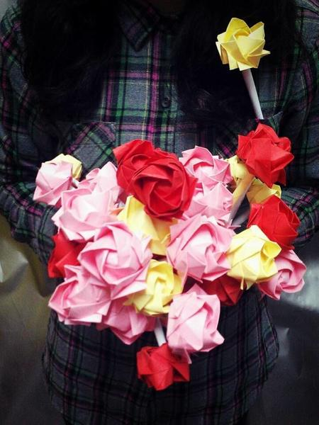

帮助信息标题
- 更新时间：2014.03.03

2014年3月6日下午6点，随着校内广播的一句“信息学院 软件学院女生节快乐！”，这一场由信息学院 软件学院团委学生会（以下简称“团学”）组织策划的女生节活动也奏响了序曲。
刚吃过饭，女生们就从广播中感受到了男生们送来的诗情画意的祝福，这也正是团学工作人员所期待的。晚十点，工作人员正在整理宿舍楼下“爱心信箱”里男生们投入的信。尽管外面飘着绵绵细雨，工作人员依然满心喜悦地准备着活动，3月7日凌晨，这些信就会被塞入女生宿舍的门缝中。
3月7日早晨7点，女生宿舍外传来熙熙攘攘的祝福声，原来是学院的男生们送来了早餐。整栋宿舍都沉浸在浓浓的女生节氛围里。今天，她们不仅是自己生活的主角，也是信息学院 软件学院的主角！女生们不仅感受到了学院的关怀，也在这个有点寒意的春天里感受到一丝丝温暖。上午10点50分，大一英语课课间，团学工作人员播放了由学院男生、助班、辅导员老师提前录制的、对女生的祝福。视频在教室掀起了一场场高潮，看到身边熟悉的身影出现在大屏幕上，女生们不禁感动和大笑。11点40分，五山区四栋楼下团学工作人员拿着他们熬夜折好的“纸玫瑰”，献给路过的每一名女生，并轻轻的送上一句“女生节快乐”。与此同时，关注“信息软件女生节”微信公众号的领奖活动也在旁如火如荼的进行中。不仅如此，华山西园的的摆摊活动也吸引了大量同学参与进来。工作人员穿上了“小黄人”的玩偶服，为活动增添了不少人气。他们的认真的工作态度得到了路过的同学的夸奖。
下午6点，信息学院、软件学院女生节活动温馨地落下了帷幕。本次活动从细节出发，以书信、折纸等简单又充满意义的送祝福方式，增进了学院男生、女生之间的交流，增强了学院的凝聚力。此外，活动还丰富了女生们的课余生活，引导她们更多地关注自身的道德修养、文化内涵，心理健康，从容自信等综合素质的提高，帮助女生正确看待和审视自己，在未来的路中洋溢自信与热情。